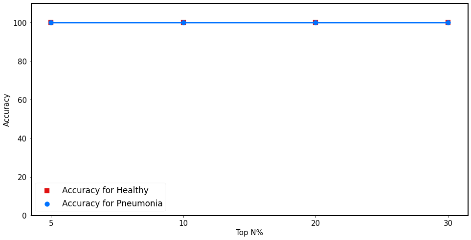

#import os#os.system ("pip install keras==2.4.3")!pip install tensorflowimport kerasprint('The keras version is {}.'.format(keras.__version__))
Defaulting to user installation because normal site-packages is not writeable
Requirement already satisfied: tensorflow in /usr/local/lib/python3.10/site-packages (2.13.1)
Requirement already satisfied: absl-py>=1.0.0 in /usr/local/lib/python3.10/site-packages (from tensorflow) (1.4.0)
Requirement already satisfied: astunparse>=1.6.0 in /usr/local/lib/python3.10/site-packages (from tensorflow) (1.6.3)
Requirement already satisfied: flatbuffers>=23.1.21 in /usr/local/lib/python3.10/site-packages (from tensorflow) (23.5.26)
Requirement already satisfied: gast<=0.4.0,>=0.2.1 in /usr/local/lib/python3.10/site-packages (from tensorflow) (0.4.0)
Requirement already satisfied: google-pasta>=0.1.1 in /usr/local/lib/python3.10/site-packages (from tensorflow) (0.2.0)
Requirement already satisfied: grpcio<2.0,>=1.24.3 in /usr/local/lib/python3.10/site-packages (from tensorflow) (1.56.2)
Requirement already satisfied: h5py>=2.9.0 in /usr/local/lib/python3.10/site-packages (from tensorflow) (3.7.0)
Requirement already satisfied: keras<2.14,>=2.13.1 in /usr/local/lib/python3.10/site-packages (from tensorflow) (2.13.1)
Requirement already satisfied: libclang>=13.0.0 in /usr/local/lib/python3.10/site-packages (from tensorflow) (14.0.1)
Requirement already satisfied: numpy<=1.24.3,>=1.22 in /usr/local/lib/python3.10/site-packages (from tensorflow) (1.23.5)
Requirement already satisfied: opt-einsum>=2.3.2 in /usr/local/lib/python3.10/site-packages (from tensorflow) (3.3.0)
Requirement already satisfied: packaging in /usr/local/lib/python3.10/site-packages (from tensorflow) (22.0)
Requirement already satisfied: protobuf!=4.21.0,!=4.21.1,!=4.21.2,!=4.21.3,!=4.21.4,!=4.21.5,<5.0.0dev,>=3.20.3 in /usr/local/lib/python3.10/site-packages (from tensorflow) (3.20.3)
Requirement already satisfied: setuptools in /usr/local/lib/python3.10/site-packages (from tensorflow) (58.1.0)
Requirement already satisfied: six>=1.12.0 in /usr/local/lib/python3.10/site-packages (from tensorflow) (1.16.0)
Requirement already satisfied: tensorboard<2.14,>=2.13 in /usr/local/lib/python3.10/site-packages (from tensorflow) (2.13.0)
Requirement already satisfied: tensorflow-estimator<2.14,>=2.13.0 in /usr/local/lib/python3.10/site-packages (from tensorflow) (2.13.0)
Requirement already satisfied: termcolor>=1.1.0 in /usr/local/lib/python3.10/site-packages (from tensorflow) (1.1.0)
Requirement already satisfied: typing-extensions<4.6.0,>=3.6.6 in /usr/local/lib/python3.10/site-packages (from tensorflow) (4.5.0)
Requirement already satisfied: wrapt>=1.11.0 in /usr/local/lib/python3.10/site-packages (from tensorflow) (1.14.1)
Requirement already satisfied: tensorflow-io-gcs-filesystem>=0.23.1 in /usr/local/lib/python3.10/site-packages (from tensorflow) (0.26.0)
Requirement already satisfied: wheel<1.0,>=0.23.0 in /usr/local/lib/python3.10/site-packages (from astunparse>=1.6.0->tensorflow) (0.37.1)
Requirement already satisfied: google-auth<3,>=1.6.3 in /usr/local/lib/python3.10/site-packages (from tensorboard<2.14,>=2.13->tensorflow) (2.16.2)
Requirement already satisfied: google-auth-oauthlib<1.1,>=0.5 in /usr/local/lib/python3.10/site-packages (from tensorboard<2.14,>=2.13->tensorflow) (1.0.0)
Requirement already satisfied: markdown>=2.6.8 in /usr/local/lib/python3.10/site-packages (from tensorboard<2.14,>=2.13->tensorflow) (3.3.7)
Requirement already satisfied: requests<3,>=2.21.0 in /usr/local/lib/python3.10/site-packages (from tensorboard<2.14,>=2.13->tensorflow) (2.28.1)
Requirement already satisfied: tensorboard-data-server<0.8.0,>=0.7.0 in /usr/local/lib/python3.10/site-packages (from tensorboard<2.14,>=2.13->tensorflow) (0.7.1)
Requirement already satisfied: werkzeug>=1.0.1 in /usr/local/lib/python3.10/site-packages (from tensorboard<2.14,>=2.13->tensorflow) (2.1.2)
Requirement already satisfied: cachetools<6.0,>=2.0.0 in /usr/local/lib/python3.10/site-packages (from google-auth<3,>=1.6.3->tensorboard<2.14,>=2.13->tensorflow) (5.3.1)
Requirement already satisfied: pyasn1-modules>=0.2.1 in /usr/local/lib/python3.10/site-packages (from google-auth<3,>=1.6.3->tensorboard<2.14,>=2.13->tensorflow) (0.2.8)
Requirement already satisfied: rsa<5,>=3.1.4 in /usr/local/lib/python3.10/site-packages (from google-auth<3,>=1.6.3->tensorboard<2.14,>=2.13->tensorflow) (4.8)
Requirement already satisfied: requests-oauthlib>=0.7.0 in /usr/local/lib/python3.10/site-packages (from google-auth-oauthlib<1.1,>=0.5->tensorboard<2.14,>=2.13->tensorflow) (1.3.1)
Requirement already satisfied: charset-normalizer<3,>=2 in /usr/local/lib/python3.10/site-packages (from requests<3,>=2.21.0->tensorboard<2.14,>=2.13->tensorflow) (2.1.0)
Requirement already satisfied: idna<4,>=2.5 in /usr/local/lib/python3.10/site-packages (from requests<3,>=2.21.0->tensorboard<2.14,>=2.13->tensorflow) (3.3)
Requirement already satisfied: urllib3<1.27,>=1.21.1 in /usr/local/lib/python3.10/site-packages (from requests<3,>=2.21.0->tensorboard<2.14,>=2.13->tensorflow) (1.26.9)
Requirement already satisfied: certifi>=2017.4.17 in /usr/local/lib/python3.10/site-packages (from requests<3,>=2.21.0->tensorboard<2.14,>=2.13->tensorflow) (2022.6.15)
Requirement already satisfied: pyasn1<0.5.0,>=0.4.6 in /usr/local/lib/python3.10/site-packages (from pyasn1-modules>=0.2.1->google-auth<3,>=1.6.3->tensorboard<2.14,>=2.13->tensorflow) (0.4.8)
Requirement already satisfied: oauthlib>=3.0.0 in /usr/local/lib/python3.10/site-packages (from requests-oauthlib>=0.7.0->google-auth-oauthlib<1.1,>=0.5->tensorboard<2.14,>=2.13->tensorflow) (3.2.0)
2025-02-27 04:22:52.289580: I tensorflow/core/util/port.cc:110] oneDNN custom operations are on. You may see slightly different numerical results due to floating-point round-off errors from different computation orders. To turn them off, set the environment variable `TF_ENABLE_ONEDNN_OPTS=0`.
2025-02-27 04:22:52.821859: I tensorflow/core/platform/cpu_feature_guard.cc:182] This TensorFlow binary is optimized to use available CPU instructions in performance-critical operations.
To enable the following instructions: AVX2 AVX512F AVX512_VNNI FMA, in other operations, rebuild TensorFlow with the appropriate compiler flags.
WARNING:root:Limited tf.compat.v2.summary API due to missing TensorBoard installation.
WARNING:root:Limited tf.compat.v2.summary API due to missing TensorBoard installation.
WARNING:root:Limited tf.compat.v2.summary API due to missing TensorBoard installation.
WARNING:root:Limited tf.summary API due to missing TensorBoard installation.
2025-02-27 04:22:54.885580: E tensorflow/compiler/xla/stream_executor/cuda/cuda_driver.cc:268] failed call to cuInit: CUDA_ERROR_NO_DEVICE: no CUDA-capable device is detected
WARNING:root:Limited tf.compat.v2.summary API due to missing TensorBoard installation.
WARNING:root:Limited tf.compat.v2.summary API due to missing TensorBoard installation.
WARNING:root:Limited tf.compat.v2.summary API due to missing TensorBoard installation.
VOC-NOTICE: GPU memory for this assignment is capped at 1024MiB
VOC-NOTICE: GPU memory for this assignment is capped at 1024MiB
The keras version is 2.13.1.
/tmp/ipykernel_4301/3485464767.py:8: MatplotlibDeprecationWarning: The seaborn styles shipped by Matplotlib are deprecated since 3.6, as they no longer correspond to the styles shipped by seaborn. However, they will remain available as 'seaborn-v0_8-<style>'. Alternatively, directly use the seaborn API instead.
plt.style.use('seaborn-paper')
Library Imports
import osimport sysimport randomimport numpy as npimport pandas as pdfrom os import walk# Metricsfrom sklearn.metrics import*# Keras library for deep learning# https://keras.io/import tensorflow as tfimport kerasfrom keras.datasets import mnist # MNIST Data setfrom keras.models import Sequential # Model buildingfrom keras.layers import*# Model layersfrom keras.preprocessing.image import*from tensorflow.keras.utils import*from sklearn.model_selection import train_test_splitimport warningswarnings.simplefilter(action='ignore', category=FutureWarning)
1. Helper Functions
1.1 Confusion Matrix
Confusion matrices are an important toolkit in every data scientist’s box. We have created a function for you that you can use to create visual confusion matrices and analyze your models.
def displayConfusionMatrix(confusionMatrix, precisionNegative, precisionPositive, recallNegative, recallPositive, title):# Set font size for the plots. You can ignore this line. PLOT_FONT_SIZE =14# Set plot size. Please ignore this line plt.rcParams['figure.figsize'] = [5, 5]# Transpose of confusion matrix to align the plot with the actual precision recall values. Please ignore this as well. confusionMatrix = np.transpose(confusionMatrix)# Plotting the confusion matrix plt.imshow(confusionMatrix, interpolation='nearest',cmap=plt.cm.Blues, vmin=0, vmax=100)# Setting plot properties. You should ignore everything from here on. xticks = np.array([-0.5, 0, 1,1.5]) plt.gca().set_xticks(xticks) plt.gca().set_yticks(xticks) plt.gca().set_xticklabels(["", "Healthy\nRecall="+str(recallNegative) , "Pneumonia\nRecall="+str(recallPositive), ""], fontsize=PLOT_FONT_SIZE) plt.gca().set_yticklabels(["", "Healthy\nPrecision="+str(precisionNegative) , "Pneumonia\nPrecision="+str(precisionPositive), ""], fontsize=PLOT_FONT_SIZE) plt.ylabel("Predicted Class", fontsize=PLOT_FONT_SIZE) plt.xlabel("Actual Class", fontsize=PLOT_FONT_SIZE) plt.title(title, fontsize=PLOT_FONT_SIZE)# Add text in heatmap boxesfor i inrange(2):for j inrange(2): text = plt.text(j, i, confusionMatrix[i][j], ha="center", va="center", color="white", size=15) ### size here is the size of text inside a single box in the heatmap plt.show()
def calculateMetrics(predictions, predictionsProbabilities, actualLabels):# Convert label format from [0,1](label 1) and [1,0](label 0) into single integers: 1 and 0. actualLabels = [item[1] for item in actualLabels]# Get probabilities for the class with label 1. That is all we need to compute AUCs. We don't need probabilities for class 0. predictionsProbabilities = [item[1] for item in predictionsProbabilities]# Calculate metrics using scikit-learn functions. The round function is used to round the numbers up to 2 decimal points.try: accuracy =round(accuracy_score(actualLabels, predictions) *100, 2) precisionNegative =round(precision_score(actualLabels, predictions, average =None)[0] *100, 2) precisionPositive =round(precision_score(actualLabels, predictions, average =None)[1] *100, 2) recallNegative =round(recall_score(actualLabels, predictions, average =None)[0] *100, 2) recallPositive =round(recall_score(actualLabels, predictions, average =None)[1] *100, 2)except:print("An exception occurred but was caught.") auc =round(roc_auc_score(actualLabels, predictionsProbabilities) *100, 2)return auc
1.2 Metrics Calculation
We are giving you a function that will calculate all the metrics you’ll need in order to analyze your model
def calculateMetricsAndPrint(predictions, predictionsProbabilities, actualLabels):# Convert label format from [0,1](label 1) and [1,0](label 0) into single integers: 1 and 0. actualLabels = [item[1] for item in actualLabels]# Get probabilities for the class with label 1. That is all we need to compute AUCs. We don't need probabilities for class 0. predictionsProbabilities = [item[1] for item in predictionsProbabilities]# Calculate metrics using scikit-learn functions. The round function is used to round the numbers up to 2 decimal points. accuracy =round(accuracy_score(actualLabels, predictions) *100, 2) precisionNegative =round(precision_score(actualLabels, predictions, average =None)[0] *100, 2) precisionPositive =round(precision_score(actualLabels, predictions, average =None)[1] *100, 2) recallNegative =round(recall_score(actualLabels, predictions, average =None)[0] *100, 2) recallPositive =round(recall_score(actualLabels, predictions, average =None)[1] *100, 2) auc =round(roc_auc_score(actualLabels, predictionsProbabilities) *100, 2) confusionMatrix = confusion_matrix(actualLabels, predictions)# Print metrics. .%2f prints a number upto 2 decimal points only.print("------------------------------------------------------------------------")print("Accuracy: %.2f\nPrecisionNegative: %.2f\nPrecisionPositive: %.2f\nRecallNegative: %.2f\nRecallPositive: %.2f\nAUC Score: %.2f"% (accuracy, precisionNegative, precisionPositive, recallNegative, recallPositive, auc))print("------------------------------------------------------------------------")print("+ Printing confusion matrix...\n")# Display confusion matrix displayConfusionMatrix(confusionMatrix, precisionNegative, precisionPositive, recallNegative, recallPositive, "Confusion Matrix")print("+ Printing ROC curve...\n")# ROC Curve plt.rcParams['figure.figsize'] = [16, 8] FONT_SIZE =16 falsePositiveRateDt, truePositiveRateDt, _ = roc_curve(actualLabels, predictionsProbabilities) plt.plot(falsePositiveRateDt, truePositiveRateDt, linewidth =5, color='black') plt.xticks(fontsize=FONT_SIZE) plt.yticks(fontsize=FONT_SIZE) plt.xlabel("False Positive Rate", fontsize=FONT_SIZE) plt.ylabel("True Positive Rate", fontsize=FONT_SIZE) plt.show()return auc
1.3 Kaggle Predictions
def getKagglePredictions(model, kaggleData, filename):print("+ Writing kaggle test results in : results/%s..."% filename) predictions = model.predict(kaggleData) predictionProbs = [item[1] for item in predictions]# Store predictions for kaggle outputFile =open("results/"+str(filename), "w") outputFile.write("Id,Prediction\n")for i inrange(0, len(predictionProbs)): outputFile.write(str(i +1) +","+str(predictionProbs[i]) +"\n") outputFile.close()
1.4 Top n% accuracy
def calculateClasswiseTopNAccuracy(actualLabels, predictionsProbs, TOP_N):""" TOP_N is the top n% predictions you want to use for each class """ discreteActualLabels = [1if item[1] > item[0] else0for item in actualLabels] discretePredictions = [1if item[1] > item[0] else0for item in predictionsProbs] predictionProbsTopNHealthy, predictionProbsTopNPneumonia = [item[0] for item in predictionsProbs], [item[1] for item in predictionsProbs] predictionProbsTopNHealthy =list(reversed(sorted(predictionProbsTopNHealthy)))[:int(len(predictionProbsTopNHealthy) * TOP_N /100)][-1] predictionProbsTopNPneumonia =list(reversed(sorted(predictionProbsTopNPneumonia)))[:int(len(predictionProbsTopNPneumonia) * TOP_N /100)][-1]# Calculate accuracy for both classes accuracyHealthy = [] accuracyPneumonia = []for i inrange(0, len(discretePredictions)):if discretePredictions[i] ==1:# Pneumoniaif predictionsProbs[i][1] > predictionProbsTopNPneumonia: accuracyPneumonia.append(int(discreteActualLabels[i]) ==1)else:# Healthyif predictionsProbs[i][0] > predictionProbsTopNHealthy: accuracyHealthy.append(int(discreteActualLabels[i]) ==0) accuracyHealthy =round((accuracyHealthy.count(True) *100) /len(accuracyHealthy), 2) accuracyPneumonia =round((accuracyPneumonia.count(True) *100) /len(accuracyPneumonia), 2)return accuracyHealthy, accuracyPneumonia
2. Data Loading
2.1 Loading File Paths
We will first load file paths from normal and pneumonia folders in the train directory.
# Load normal imagesnormalImagesPath ="data/train/normal"normalImageFiles = []for(_,_,files) in walk(normalImagesPath): normalImageFiles.extend(files)normalImagesPath2 ="data/train/normal2"for(_,_,files) in walk(normalImagesPath2): normalImageFiles.extend(files)print(len(normalImageFiles))# Load pneumonia imagespneumoniaImagesPath ="data/train/pneumonia"pneumoniaImageFiles = []for(_,_,files) in walk(pneumoniaImagesPath): pneumoniaImageFiles.extend(files)random.shuffle(pneumoniaImageFiles)pneumoniaImageFiles = pneumoniaImageFiles[:len(normalImageFiles)]print("Normal X-ray images: %d\nPneumonia X-ray images: %d"% (len(normalImageFiles), len(pneumoniaImageFiles)))
1436
Normal X-ray images: 1436
Pneumonia X-ray images: 1436
2.2 Loading Image Data
2.2.1 Training and Validation
imagesData = []imagesLabels = []forfilein normalImageFiles: fullPath = normalImagesPath +"/"+fileif os.path.exists(fullPath) ==False: fullPath = normalImagesPath2 +"/"+fileif os.path.exists(fullPath) ==False:continue imageData = load_img(fullPath, color_mode ="grayscale") # load_img function comes from keras library when we do "from keras.preprocessing.image import *" imageArray = img_to_array(imageData) /255.0 imagesData.append(imageArray) imagesLabels.append(0)forfilein pneumoniaImageFiles: fullPath = pneumoniaImagesPath +"/"+fileif os.path.exists(fullPath) ==False:continue imageData = load_img(pneumoniaImagesPath +"/"+file, color_mode ="grayscale") # load_img function comes from keras library when we do "from keras.preprocessing.image import *" imageArray = img_to_array(imageData) /255.0 imagesData.append(imageArray) imagesLabels.append(1)imagesData = np.array(imagesData)imagesLabels = keras.utils.to_categorical(imagesLabels)print("Input data shape: %s"% (imagesData.shape,))
Input data shape: (2872, 256, 256, 1)
"""from zipfile import ZipFilefile_name = "data/test.zip"# opening the zip file in READ mode with ZipFile(file_name, 'r') as zip: # printing all the contents of the zip file zip.printdir() # extracting all the files print('Extracting all the files now...') zip.extractall("data/") print('Done!')"""
'\nfrom zipfile import ZipFile\nfile_name = "data/test.zip"\n\n# opening the zip file in READ mode \nwith ZipFile(file_name, \'r\') as zip: \n # printing all the contents of the zip file \n zip.printdir() \n \n # extracting all the files \n print(\'Extracting all the files now...\') \n zip.extractall("data/") \n print(\'Done!\')\n'
2.2.2 Kaggle Testing Data
testImagesPath ="data/test/"testImageFiles = []for(_,_,files) in walk(testImagesPath): testImageFiles.extend(files)testImageFiles =list(sorted(testImageFiles))kaggleTestImages = []forfilein testImageFiles: fullPath = testImagesPath +"/"+fileif os.path.exists(fullPath) ==False:continue imageData = load_img(testImagesPath +"/"+file, color_mode ="grayscale") # load_img function comes from keras library when we do "from keras.preprocessing.image import *" imageArray = img_to_array(imageData) /255.0 kaggleTestImages.append(imageArray)kaggleTestImages = np.array(kaggleTestImages)print("Number of test images: %d"%len(kaggleTestImages))
Number of test images: 200
2.3 Data Splitting into Training and Validation
def trainTestSplit(data, labels):""" 80-20 train-test data split """ trainData, trainLabels, testData, testLabels = [], [], [], []for i inrange(0, len(data)):if i %5==0: testData.append(data[i]) testLabels.append(labels[i])else: trainData.append(data[i]) trainLabels.append(labels[i])return np.array(trainData), np.array(testData), np.array(trainLabels), np.array(testLabels)
# In our context, since we have a private test data on kaggle, our test data here would actually mean validation data. We will use results on this validation(test) data to see how our model would perform on the actual test data.# Split data into 80% training and 20% testingtrainData, testData, trainLabels, testLabels = trainTestSplit(imagesData, imagesLabels)
3. Deep Learning Models
We will use keras to create deep learning models. Since we are dealing with images, we will use convolutional layers. For more details, please visit: https://keras.io/layers/convolutional/
3.1 Parameterized Convolutional Neural Networks
We will first provide you with a simple function that takes in a few parameters and create a convolutional neural network model for you. This is the easiest way to create a CNN model.
from keras.metrics import AUCdef createParameterizedConvolutionalNeuralNetwork(trainImages, numLayers, numFilters, kernelSize, maxPooling, dropoutValue, learningRate, numClasses):# Create model object model = Sequential()# Add the first layer with dropout model.add(Conv2D(numFilters, kernel_size=(kernelSize, kernelSize), activation='relu', padding='same', input_shape=trainImages.shape[1:])) model.add(MaxPooling2D(pool_size=(maxPooling, maxPooling))) model.add(Dropout(dropoutValue))while numLayers >1: model.add(Conv2D(numFilters, kernel_size=(kernelSize, kernelSize), activation='relu', padding='same')) model.add(MaxPooling2D(pool_size=(maxPooling, maxPooling))) model.add(Dropout(dropoutValue)) numLayers -=1# Flatten and Dense Layers model.add(Flatten()) model.add(Dense(64, activation='relu')) model.add(Dropout(dropoutValue)) model.add(Dense(numClasses, activation='softmax'))# ✅ Compile model with AUC metric model.compile(loss=keras.losses.categorical_crossentropy, optimizer=keras.optimizers.Adam(learning_rate=learningRate), metrics=['accuracy', AUC(name='auc')])return model
3.2 More Nuanced Convolutional Neural Networks
In this section, we provide you with a function where you can edit tiny details of the model to see if it can give you a greater lift as compared to the parameterized model.
from keras.layers import BatchNormalizationdef createNuancedConvolutionalNeuralNetwork(trainImages, numClasses): model = Sequential()# First Conv Block model.add(Conv2D(64, (5, 5), activation='relu', padding='same', input_shape=trainImages.shape[1:])) model.add(BatchNormalization()) model.add(MaxPooling2D(pool_size=(3, 3))) model.add(Dropout(0.5))# Second Conv Block model.add(Conv2D(32, (3, 3), activation='relu', padding='same')) model.add(BatchNormalization()) model.add(Dropout(0.3))# Third Conv Block model.add(Conv2D(32, (3, 3), activation='relu', padding='same')) model.add(BatchNormalization()) model.add(Dropout(0.3))# Dense Layers model.add(Flatten()) model.add(Dense(128, activation='relu')) model.add(Dropout(0.5)) model.add(Dense(numClasses, activation='softmax'))# Compile with AUC Metric model.compile(loss='categorical_crossentropy', optimizer=keras.optimizers.Adam(learning_rate=0.0001), metrics=['accuracy', tf.keras.metrics.AUC(name='auc')])return modelfrom keras.regularizers import l2from keras.layers import BatchNormalizationdef createOptimizedCNN(input_shape, num_classes): model = Sequential()# First Convolutional Block model.add(Conv2D(64, (5, 5), activation='relu', padding='same', kernel_regularizer=l2(0.001), input_shape=input_shape)) model.add(BatchNormalization()) model.add(MaxPooling2D(pool_size=(3, 3))) model.add(Dropout(0.5))# Second Convolutional Block model.add(Conv2D(128, (3, 3), activation='relu', padding='same', kernel_regularizer=l2(0.001))) model.add(BatchNormalization()) model.add(MaxPooling2D(pool_size=(2, 2))) model.add(Dropout(0.4))# Third Convolutional Block model.add(Conv2D(256, (3, 3), activation='relu', padding='same', kernel_regularizer=l2(0.001))) model.add(BatchNormalization()) model.add(Dropout(0.4))# Flatten and Dense Layers model.add(Flatten()) model.add(Dense(512, activation='relu')) model.add(Dropout(0.5)) model.add(Dense(num_classes, activation='softmax'))# Compile the model with AUC as a metric model.compile( optimizer=keras.optimizers.Adam(learning_rate=0.0001), loss='categorical_crossentropy', metrics=['accuracy', tf.keras.metrics.AUC(name='auc')] )return model
4. Model Training
4.1 Data Augmentation
Deep learning models require huge amounts of data for good performance. Since we only have around 5k examples, we will use what’s called “Data Augmentation” to create more data. To read more on data augmentation, please visit: https://towardsdatascience.com/data-augmentation-for-deep-learning-4fe21d1a4eb9
set_background('#fce53a')###################################################################################################################################################### Things you can change ###################################################################################################################################################### You can change all these parameters for different results. Please go to the following links to read more about each parameter: # https://keras.io/preprocessing/image/# https://www.pyimagesearch.com/2019/07/08/keras-imagedatagenerator-and-data-augmentation/dataAugmentation = ImageDataGenerator( rotation_range=15, # Slightly more rotation width_shift_range=0.1, height_shift_range=0.1, horizontal_flip=True, zoom_range=0.2, # Slightly more aggressive zoom shear_range=0.15)
4.2 Model Parameters
set_background('#fce53a')###################################################################################################################################################### Things you can change #####################################################################################################################################################numLayers =3# Number of convolutional layersnumFilters =32# Number of filters for the first conv layerkernelSize =3# Size of the convolutional kernelmaxPooling =2# Pooling window sizedropoutValue =0.3# Dropout rate to prevent overfittinglearningRate =0.0005# Initial learning ratenumClasses =2# Binary classification (Healthy vs Pneumonia)batchSize =8# Number of images per batchepochs =30###################################################################################################################################################### Please do not change this line.dataAugmentation.fit(trainData) # Training the augmentor in case we set USE_DATA_AUGMENTATION to True.
4.3 Training and Validation
4.3.1 Model Instantiation
# Create modelparameterizedModel = createParameterizedConvolutionalNeuralNetwork(trainData, numLayers, numFilters, kernelSize, maxPooling, dropoutValue, learningRate, numClasses=2)print("+ Your parameterized model has been created...")
+ Your parameterized model has been created...
# You can create the other model with the following linenonParameterizedModel = createNuancedConvolutionalNeuralNetwork(imagesData, numClasses =2)print("+ Your non parameterized model has been created...")
+ Your non parameterized model has been created...
###################################################################################################################################################### Things you can change ###################################################################################################################################################### Please assign model the deep learning model you want to use i.e parameterizedModel or nonParameterizedModelmodel = parameterizedModel
4.3.2 Model Training and Validation
from keras.callbacks import EarlyStopping, ReduceLROnPlateau# Early stopping to prevent overfittingearly_stop = EarlyStopping( monitor='val_auc', patience=2, # Stop after 2 stagnant epochs restore_best_weights=True, mode='max')# Reduce learning rate when a metric has stopped improvinglr_reduce = ReduceLROnPlateau( monitor='val_auc', # Monitor validation AUC factor=0.5, # Reduce learning rate by half patience=3, # Wait for 3 epochs before reducing LR min_lr=1e-7, # Don't go below this learning rate mode='max'# Because higher AUC is better)USE_DATA_AUGMENTATION =True# or False, depending on whether you want to use itbestAcc =0.0bestEpoch =0bestAccPredictions, bestAccPredictionProbabilities = [], []print("+ Starting training. Each epoch can take about 2-5 minutes, hold tight!")print("-----------------------------------------------------------------------\n")# Define whether to use data augmentationUSE_DATA_AUGMENTATION =True# Set to False if you want to disable itoptimizedModel = createOptimizedCNN(trainData.shape[1:], numClasses)# Fit with callbackshistory = optimizedModel.fit( dataAugmentation.flow(trainData, trainLabels, batch_size=batchSize), validation_data=(testData, testLabels), epochs=30, # Reduced for speed class_weight={0: 1, 1: 1.5}, callbacks=[early_stop, lr_reduce], verbose=2)imageData = load_img(fullPath, color_mode="grayscale", target_size=(128, 128))# Start Training Loopfor epoch inrange(epochs):print(f"Epoch {epoch +1}/{epochs}")if USE_DATA_AUGMENTATION:# Use augmented data consistently for better generalization history = model.fit( dataAugmentation.flow(trainData, trainLabels, batch_size=batchSize), validation_data=(testData, testLabels), epochs=50, # Allow more epochs, but early stopping will handle overfitting callbacks=[lr_reduce, early_stop], class_weight={0: 1, 1: 1.5}, verbose=2)else:# Train without data augmentation history = model.fit(trainData, trainLabels, batch_size=batchSize, epochs=1, validation_data=(testData, testLabels), class_weight={0: 1, 1: 1.5}, verbose=2)#################################################### Model Testing ################################################################ Evaluate on validation set accuracy =round(model.evaluate(testData, testLabels, verbose=0)[1] *100, 3) predictions = model.predict(testData) AccPredictionProbabilities = predictions AccPredictions = [1if item[1] > item[0] else0for item in AccPredictionProbabilities] epochAUC = calculateMetrics(AccPredictions, AccPredictionProbabilities, testLabels)print(f"+ Test accuracy at epoch {epoch +1} is: {accuracy:.2f}")print(f"+ Test AUC at epoch {epoch +1} is: {epochAUC:.3f}")# Logging resultswithopen("results/Log.txt", "a") as outputFile: outputFile.write(f"Epoch-Accuracy-AUC \t{epoch +1}\t{accuracy:.2f}\t{epochAUC:.3f}\n")# Save best model based on AUCif epochAUC > bestAcc: bestEpoch = epoch +1 bestAcc = epochAUC bestAccPredictions = AccPredictions bestAccPredictionProbabilities = AccPredictionProbabilities# Save predictions for Kaggle submission kaggleResultsFileName =f"epoch-{epoch +1}-results.csv" getKagglePredictions(model, kaggleTestImages, kaggleResultsFileName)print(f"+ Saved Kaggle predictions to {kaggleResultsFileName}\n")print('\n'+'-'*72+'\n')print("------------------------------------------------------------------------")print(f"*** Best AUC achieved: {bestAcc:.3f} at epoch {bestEpoch} ***")print("------------------------------------------------------------------------")##################################################### Printing Best Metrics ##########################################################print(f"\n*** Printing our best validation results from epoch {bestEpoch} ...")calculateMetricsAndPrint(bestAccPredictions, bestAccPredictionProbabilities, testLabels)
################################## You can change values inside the following list ###########################topNValues = [5, 10, 20, 30]##############################################################################################################accuraciesHealthy, accuraciesPneumonia = [], []for topn in topNValues: accuracyHealthy, accuracyPneumonia = calculateClasswiseTopNAccuracy(testLabels, bestAccPredictionProbabilities, topn) accuraciesHealthy.append(accuracyHealthy) accuraciesPneumonia.append(accuracyPneumonia)print("+ Accuracy for top %d percent predictions for healthy: %.2f, pneumonia: %.2f"% (topn, accuracyHealthy, accuracyPneumonia))# Plot resultsx = np.arange(len(accuraciesHealthy))plt.plot(x, accuraciesHealthy, linewidth =3, color ='#e01111')scatterHealthy = plt.scatter(x, accuraciesHealthy, marker ='s', s =100, color ='#e01111')plt.plot(x, accuraciesPneumonia, linewidth =3, color ='#0072ff')scatterPneumonia = plt.scatter(x, accuraciesPneumonia, marker ='o', s =100, color ='#0072ff')plt.xticks(x, topNValues, fontsize =15)plt.yticks(fontsize =15)plt.xlabel("Top N%", fontsize =15)plt.ylabel("Accuracy", fontsize =15)plt.legend([scatterHealthy, scatterPneumonia], ["Accuracy for Healthy", "Accuracy for Pneumonia"], fontsize =17)plt.ylim(0, 110)plt.show()
+ Accuracy for top 5 percent predictions for healthy: 100.00, pneumonia: 100.00
+ Accuracy for top 10 percent predictions for healthy: 100.00, pneumonia: 100.00
+ Accuracy for top 20 percent predictions for healthy: 100.00, pneumonia: 100.00
+ Accuracy for top 30 percent predictions for healthy: 100.00, pneumonia: 100.00

optimizedModel.save_weights("best_model_weights.h5") # Saves only weights
# Rebuild the model architecture firstoptimizedModel = createOptimizedCNN(trainData.shape[1:], numClasses) # Load the saved weightsoptimizedModel.load_weights("best_model_weights.h5")
import tensorflow as tffrom tensorflow.keras.utils import plot_modelimport matplotlib.pyplot as plt# Rebuild the model architecture firstoptimizedModel = createOptimizedCNN(trainData.shape[1:], numClasses) # Load the saved weightsoptimizedModel.load_weights("best_model_weights.h5") # Generate and save model visualizationplot_model(optimizedModel, to_file="model_architecture.png", show_shapes=True, show_layer_names=True, expand_nested=True, dpi=96)# Display the model imageimg = plt.imread("model_architecture.png")plt.figure(figsize=(12, 12))plt.imshow(img)plt.axis("off")plt.show()
2025-02-27 06:07:50.018149: I tensorflow/core/util/port.cc:110] oneDNN custom operations are on. You may see slightly different numerical results due to floating-point round-off errors from different computation orders. To turn them off, set the environment variable `TF_ENABLE_ONEDNN_OPTS=0`.
2025-02-27 06:07:50.595245: I tensorflow/core/platform/cpu_feature_guard.cc:182] This TensorFlow binary is optimized to use available CPU instructions in performance-critical operations.
To enable the following instructions: AVX2 AVX512F AVX512_VNNI FMA, in other operations, rebuild TensorFlow with the appropriate compiler flags.
WARNING:root:Limited tf.compat.v2.summary API due to missing TensorBoard installation.
WARNING:root:Limited tf.compat.v2.summary API due to missing TensorBoard installation.
WARNING:root:Limited tf.compat.v2.summary API due to missing TensorBoard installation.
WARNING:root:Limited tf.summary API due to missing TensorBoard installation.
2025-02-27 06:07:52.597924: E tensorflow/compiler/xla/stream_executor/cuda/cuda_driver.cc:268] failed call to cuInit: CUDA_ERROR_NO_DEVICE: no CUDA-capable device is detected
WARNING:root:Limited tf.compat.v2.summary API due to missing TensorBoard installation.
WARNING:root:Limited tf.compat.v2.summary API due to missing TensorBoard installation.
WARNING:root:Limited tf.compat.v2.summary API due to missing TensorBoard installation.
VOC-NOTICE: GPU memory for this assignment is capped at 1024MiB
VOC-NOTICE: GPU memory for this assignment is capped at 1024MiB
---------------------------------------------------------------------------NameError Traceback (most recent call last)
/tmp/ipykernel_9423/2837850090.py in <cell line: 6>() 4 5# Rebuild the model architecture first----> 6optimizedModel = createOptimizedCNN(trainData.shape[1:], numClasses) 7 8# Load the saved weightsNameError: name 'createOptimizedCNN' is not defined
![Created in deepnote.com]() Created in
Created in